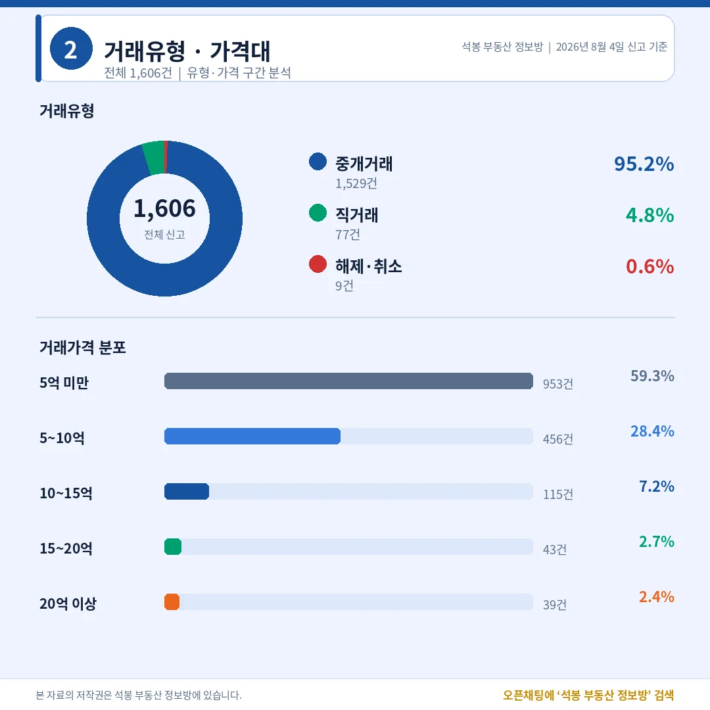
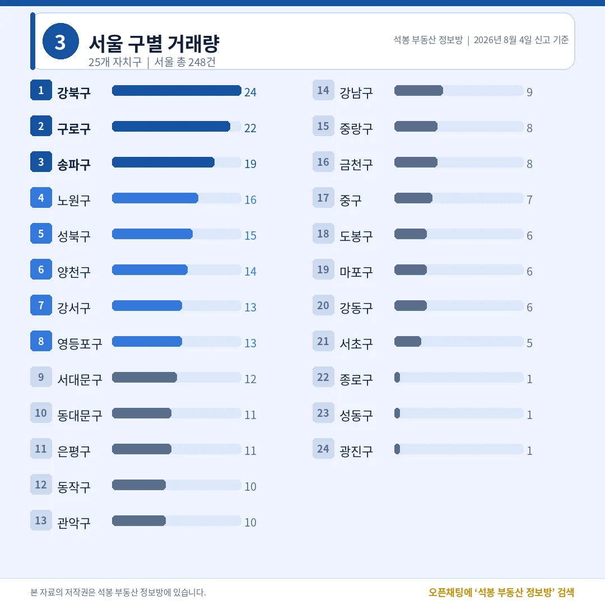
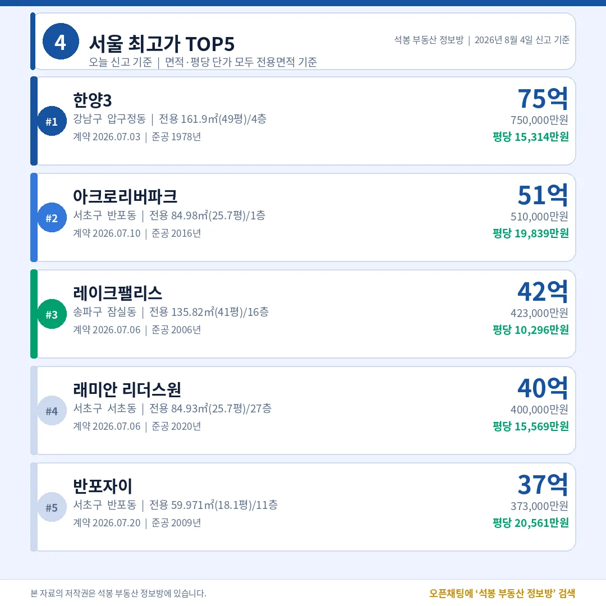
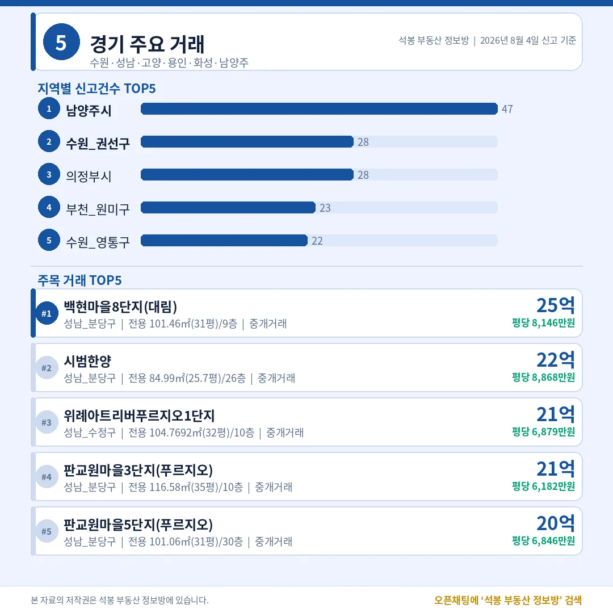
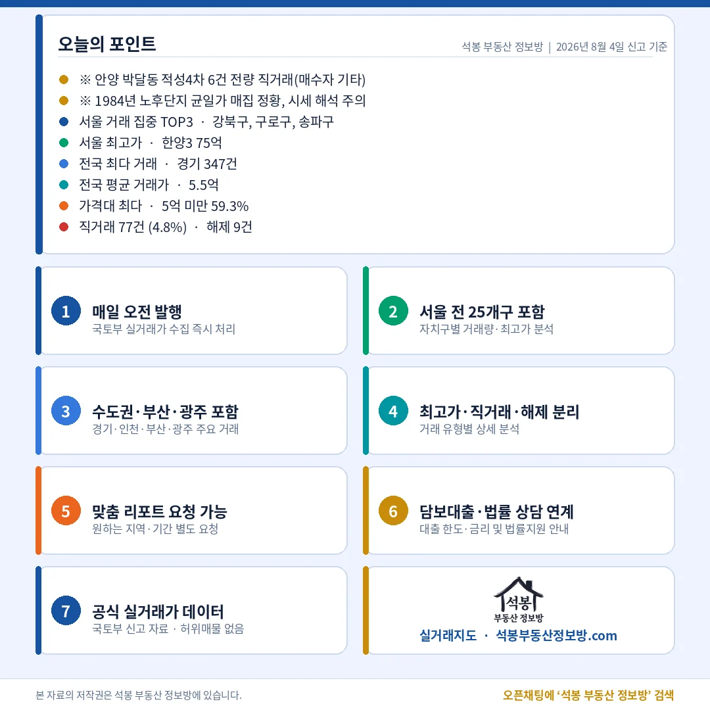

8월 4일 전국에서 아파트 1,606건이 실거래로 신고됐습니다. 오늘 가장 눈에 걸린 대목은 15억이 넘는 거래 82건의 분포였습니다. 송파구가 14건으로 1위인데, 같은 14건이 성남 분당구에서도 나왔습니다. 강남구는 8건에 그쳤습니다. 서울 안에서도 거래 건수 1위는 강남권이 아니라 강북구였고요. 오늘 숫자를 하나씩 풀어 드립니다.
단지명을 누르면 그 단지의 실거래 내역과 시세를 바로 볼 수 있습니다. (면적과 평당 단가는 모두 전용면적 기준)
오늘 시장 한눈에: 직거래 4.8%, 열에 여섯은 5억 아래

거래유형·가격대
전체 1,606건 가운데 중개거래가 1,529건(95.2%), 직거래(중개사 없이 당사자끼리 한 거래)가 77건(4.8%), 해제·취소는 9건(0.6%)이었습니다. 지난주 후반 직거래 비중이 19%까지 치솟았던 것과 비교하면 오늘은 평상시 수준으로 돌아왔습니다. 법인 간 통매각 같은 덩어리 신고가 없었다는 뜻입니다.
다만 작은 덩어리는 하나 있었습니다. 경기 안양 만안구 박달동 적성4차에서 6건이 한꺼번에 직거래로 신고됐는데, 매수자가 전부 '기타'로 잡혔습니다. 이 단지 하나가 만안구 전체 15건의 40%를 차지합니다. 게다가 전용 53.64㎡ 다섯 건의 가격이 2억 2,650만원부터 2억 3,700만원 사이에 거의 균일하게 붙어 있습니다. 1984년 준공 노후단지에서 비슷한 값에 여러 채가 한 번에 손바뀜한 모양새라, 이 가격을 박달동 시세로 읽으면 곤란합니다. 다행히 오늘 지역 순위 상위권에는 이런 쏠림이 없었습니다.
가격대는 5억 미만이 953건(59.3%)으로 압도적이었고 5~10억이 456건(28.4%)으로 뒤를 이었습니다. 10~15억 115건(7.2%), 15~20억 43건(2.7%), 20억 이상 39건(2.4%)이었습니다. 전국 평균 거래가는 5.5억이었는데, 열 건 중 여섯 건이 5억 아래에서 이뤄진 시장이라 평균값은 상단 몇 건에 끌려 올라간 숫자로 보는 편이 맞습니다.
여기서부터는 회원에게 보여드립니다
카카오 로그인 3초면 전문을 읽을 수 있습니다. 무료입니다.
가입하시면 지역 시장조사 보고서(약식)를 2회 무료로 요청하실 수 있습니다.
이미 회원이면 같은 버튼으로 로그인만 됩니다
어디서 거래됐나: 수도권 46%, 서울 1위는 강북구

서울 구별 거래량
시도별로는 경기 347건, 서울 248건, 인천 145건, 부산 134건, 대구 111건, 광주 97건, 대전 94건 순이었습니다. 수도권 합계는 740건으로 46.1%, 나머지 866건(53.9%)이 지방에서 나왔습니다. 지난주 주간 결산에서 수도권 비중이 51.2%였던 것과 견주면 절반 선이 깨진 하루입니다. 대구와 광주, 대전이 나란히 100건 안팎을 채운 것이 차이를 만들었습니다.
서울 248건을 자치구로 갈라 보면 강북구 24건이 1위, 구로구 22건이 2위, 송파구 19건이 3위였습니다. 노원구 16건, 성북구 15건, 양천구 14건이 뒤를 이었고 강남구는 9건으로 14위, 서초구는 5건에 그쳤습니다. 강남·서초·송파 세 곳을 다 합쳐도 33건인데, 노원·도봉·강북 세 곳은 46건입니다. 건수는 중저가 벨트가 만들고 금액은 강남권이 만드는 구도가 오늘도 반복됐습니다.
강북구 24건은 미아동 11건, 수유동 8건, 번동 5건으로 흩어져 있었고 특정 단지 몰아치기는 없었습니다. 중위 거래가는 7.33억, 최고가는 미아동 미아동부센트레빌 12.5억이었습니다. 구로구도 중위 7.73억에 최고가 16.29억으로 비슷한 결이었습니다. 두 자치구 모두 7억대 국민평형이 시장의 몸통을 이루고 있다는 뜻입니다.
오늘의 최고가: 49평 75억, 25.7평 51억

서울 최고가 TOP5
서울 최고가 1위는 압구정동 한양3 75.0억(전용 161.9㎡, 49.0평, 1978년 준공, 4층)이었습니다. 2위는 반포동 아크로리버파크 51.0억(전용 84.98㎡, 25.7평, 2016년 준공, 1층), 3위는 잠실동 레이크팰리스 42.3억(전용 135.82㎡, 41.1평, 2006년 준공)이었습니다. 4위 서초동 래미안 리더스원 40.0억(전용 84.93㎡, 25.7평, 2020년 준공), 5위 반포동 반포자이 37.3억(전용 59.971㎡, 18.1평, 2009년 준공)이 뒤를 이었습니다.
총액으로는 49평이 25.7평보다 24억 비싸지만, 평당 단가로 줄을 세우면 이야기가 달라집니다. 1위 한양3이 평당 15,314만원인 데 비해 2위는 평당 19,839만원, 5위 반포자이는 평당 20,561만원입니다. 반포동 신축과 준신축이 압구정 대형 구축보다 평당 3할 이상 높은 값을 받았습니다.
왜 이런 차이가 생기냐면, 압구정 구축의 가격에는 재건축 이후에 대한 기대가 섞여 있고 그 기대는 큰 대지지분에 얹히기 때문입니다. 면적이 커질수록 총액은 늘지만 평당가는 눌립니다. 반대로 반포 신축은 지금 당장 들어가 살 수 있는 상품성이 그대로 값에 반영됩니다. 오늘 서울 상단 다섯 건 중 셋이 25.7평 안팎의 국민평형이었다는 점도 같은 맥락으로 읽힙니다.
수도권 밖은 어땠나: 15억 위에서 분당이 강남구를 앞섰다

경기/인천/부산/광주
경기 347건은 남양주시 47건, 수원 권선구 28건, 의정부시 28건, 부천 원미구 23건, 수원 영통구 22건 순이었습니다. 그런데 금액 상위 다섯 건은 전부 성남에서 나왔습니다. 1위가 백현마을8단지(대림) 25.0억(전용 101.46㎡, 30.7평, 평당 8,146만원), 2위 분당 시범한양 22.0억(전용 84.99㎡, 25.7평, 평당 8,868만원), 3위 수정구 위례아트리버푸르지오1단지 21.0억이었고 판교원마을 3단지와 5단지가 각각 21.0억과 20.0억으로 뒤를 이었습니다.
여기서 앞서 짚은 숫자가 다시 보입니다. 오늘 15억 이상 거래 82건을 지역별로 갈라 보면 송파구 14건, 성남 분당구 14건, 강남구 8건, 동작구 6건, 영등포구와 서초구 각 5건이었습니다. 고가 거래의 무대가 서울 강남권만이 아니라는 뜻인데, 분당은 판교와 백현 일대 준신축이 평당 8천만원대를 유지하면서 서울 상단 국민평형과 비슷한 눈높이를 만들어 냈습니다.
인천 145건은 연수구 43건, 검단구 21건, 서해구 20건 순이었고 최고가는 송도동 송도센트럴파크푸르지오 13.5억(전용 96.934㎡, 29.3평, 평당 4,604만원)이었습니다. 부산 134건은 북구 23건, 부산진구 14건 순이었는데 상단은 우동 대우트럼프월드센텀 19.0억(전용 109.57㎡, 33.1평, 평당 5,732만원)이었고, 1979년 준공 남천동 삼익비치가 18.7억(전용 131.27㎡, 39.7평, 평당 4,709만원)으로 바로 뒤에 붙었습니다. 광주 97건은 광산구 37건, 서구 24건 순에 최고가가 봉선동 봉선2차남양휴튼 10.9억(전용 124.68㎡, 37.7평, 평당 2,885만원)이었습니다. 같은 37평대라도 광주 봉선동은 평당 2,885만원, 부산 해운대 우동은 5,732만원으로 두 배가 벌어집니다.
오늘의 인사이트

오늘 데이터는 두 가지를 보여 줍니다. 첫째, 거래의 무게중심과 금액의 무게중심은 다른 곳에 있습니다. 건수로 보면 오늘 시장은 지방(53.9%)과 서울 중저가 벨트가 끌었습니다. 서울 1위가 강북구 24건이고 강남 3구를 합쳐도 33건입니다. 반면 15억 위 82건은 송파·분당·강남·동작에 몰렸습니다. 같은 하루를 놓고도 "어디가 활발했나"와 "어디가 비쌌나"의 답이 전혀 다르니, 뉴스에서 본 지역 순위가 어느 기준의 순위인지부터 확인하는 습관이 필요합니다.
둘째, 고가 시장의 경계가 행정구역을 넘어섰습니다. 성남 분당구가 15억 이상 거래에서 강남구의 두 배 가까운 건수를 냈고, 백현동과 판교 준신축이 평당 8천만원대를 지켰습니다. 서울 상단이 반포동 25.7평 51억(평당 19,839만원)과 18.1평 37.3억(평당 20,561만원)으로 평당 2만선을 넘나드는 것과는 여전히 층이 다르지만, 20억 안팎 구간에서는 분당이 서울 상급지와 같은 후보군에 들어와 있다는 뜻입니다. 지방 역시 부산 우동 19.0억과 광주 봉선동 10.9억처럼 지역마다 뚜렷한 상단이 형성돼 있어, 전국을 하나의 시장으로 뭉뚱그려 보기 어려운 하루였습니다.
원자료: 국토교통부 실거래가 공개시스템 (2026년 8월 4일 신고분 기준) · 면적과 평당 단가는 모두 전용면적 기준 · 편집·제작: 석봉 부동산 정보방 · 실거래 신고분은 계약일과 신고일이 다를 수 있으며, 해제·취소 건이 뒤늦게 반영될 수 있습니다 · 본 자료는 정보 제공 목적이며 투자 권유가 아닙니다.